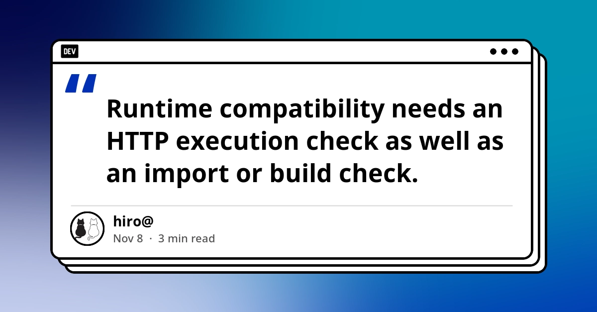
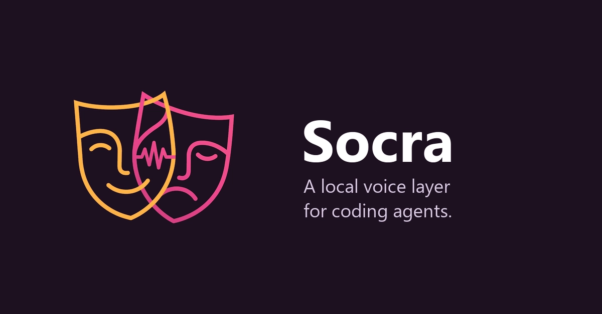
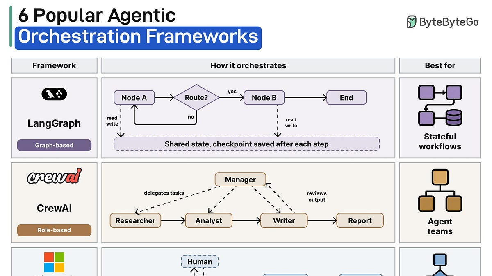
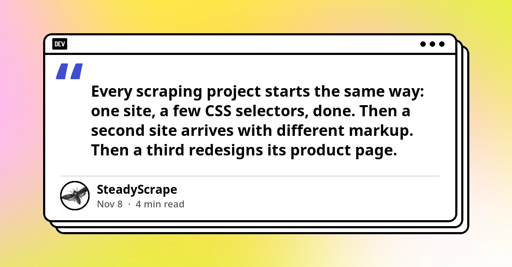
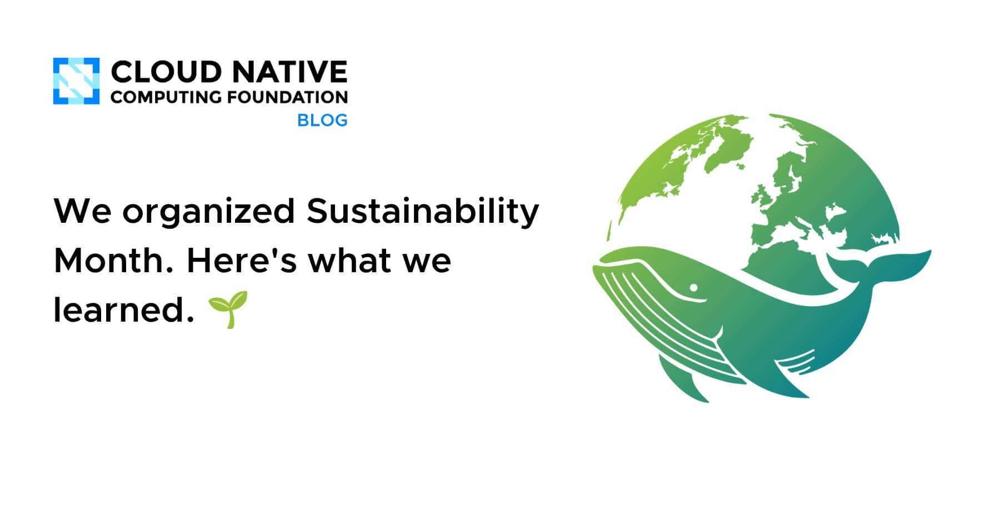

🔥 Top 3 (must read)
Claude Code's "Don't Ask Again" exposes passwords in 1,122 public GitHub files
(HN discussion) When you click "Don't Ask Again" on a command in Claude Code, the command is saved to a file, and any password inside it is saved too. Apiiro found 1,122 of these files in public GitHub repos. The HN post has 203 points and 142 comments. Why it matters: If your team uses Claude Code, check your repos and
.gitignore this week, before a secret leaks.A
Comparing Next.js Edge and Node.js: a successful build is not a successful request
In Next.js 16.3.4, an Edge route that uses
eval builds with no error but returns a 500 when it is called. This version also deprecates runtime = 'edge', and the official advice is to remove it and use the default Node.js runtime. Why it matters: Your CI should call routes over HTTP, not only build them. And any runtime = 'edge' export is now a planned migration.
datasette #3046: Don't serve link: rel=next HTTP headers to Firefox for HTML pages
Simon Willison found that a
Link: rel=next HTTP header made Firefox prefetch the next page of table rows on its own. Prefetch means the browser downloads a page before the user asks for it. So each page view quietly cost a second request. Why it matters: Any paginated web app or API that sends this header may be serving about twice the requests it needs to.S
🛠 Tools & releases
Next.js 16.3.4 deprecates the Edge runtime
: Edge routes that build fine can still fail when called. The fix is to move to the Node.js runtime.
Firefox prefetches from Link: rel=next headers
: a small header with a hidden server cost on paginated pages.
S
🤖 AI for developers
Claude Code "Don't Ask Again" secret leaks
: saved command approvals with passwords inside are ending up in public repos.
A
Socra: a local voice layer for a coding agent
: the agent gives you a spoken exam when you reach a project milestone. The goal is to learn from AI-written code, not only ship it.

ByteByteGo EP232: 6 orchestration frameworks in an AI system
: a quick overview of how multi-agent systems split up tasks, handle failures and share memory.

Schema-first AI extraction with Python
: you describe the JSON shape once, and an LLM fills it from many different page layouts. This replaces one parser per site.

👔 Engineering & teams
Claude Code secret leaks, the team view
: this is a policy question, not only a tool bug. Decide which agent config files are committed, and add secret scanning to code review and CI.
A
CNCF: what we learned from Sustainability Month
: Kubernetes resource allocation, eBPF and carbon observability seen through cost and waste. Useful if you right-size your clusters.

🎯 For me
source
Claude Code users on your team: check for committed agent settings files that contain secrets ().
A
source
Next.js on Node.js: plan to remove
runtime = 'edge', and add HTTP smoke tests to CI ().Privacy-First Flutter Apps: On-Device Data
Flutter: . This is the design of a period-tracker app with no account and no server sync. It works fully offline and has a PIN and biometric lock. It is a good reference for apps that hold sensitive user data.
💡 App ideas & indie builds
Coldframe
(HN, 197 points): a honeypot that pretends to be a supermarket fridge controller. A honeypot is a fake system that attracts attackers so you can watch what they do. It solves a real problem: learning how people attack industrial and IoT devices. Inspiration: a convincing "fake" of a niche device can be a whole product.

EyesRhythm
(HN): an offline desktop app that helps you keep a healthy blink rhythm. The problem is dry, tired eyes from long screen time. Inspiration: a tiny, offline, single-habit app for a pain that many developers have.
Did prediction markets predict the midterms?
(HN): an analysis that checks market forecasts against real election results. Inspiration: "check the claims" tools that hold forecasts to account after the event.
A
🎓 Try this
Run a quick secret check on your repos for committed Claude Code settings files. If you find any, rotate the secrets inside and add those files to
.gitignore. The Apiiro write-up explains how the leak happens. It takes about 10 minutes per repo and closes a real leak path.